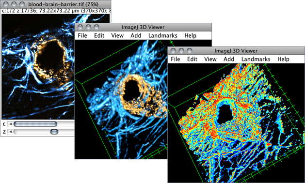

12 3D Volumes
Currently, the support for 3D ROIs (selections containing contiguous cluster of voxels) is somewhat limited in ImageJ. This limitation has been addressed by ImageJ2↑ and several IJ1 plugins. The list below summarizes some of the ImageJ plugins that deal effectively with multi-dimensional objects. Note that a manual installation of these tools as standalone ImageJ plugins is a challenging task given their special dependencies, reason why they are all bundled as part of Fiji↑.

Figure 9 3D Viewer (Fiji 1.46o), bringing hardware-accelerated 3D visualization to ImageJ. As explained in 3D Volumes↑, most of plugins that truly extend ImageJ functionally to multi-dimentional data are bundled as part of Fiji.
3D Filters Specialized 3D filters such as can be installed to perform 3D operations. Examples are the 3D processing package by Thomas Boudier [31] and the 3D binary filters by Benjamin Schmid.
3D Object Counter 3D Object Counter (3D-OC) counts and qualifies 3D objects in a stack [87], similarly to the 2D analysis performed by It is complemented by 3D Roi Manager [31], a companion plugin that adds a 3D ROI Manager↓ to ImageJ
3D Viewer 3D Viewer brings powerful hardware-accelerated 3D visualization to ImageJ [13], extending the limited functionality of In the ImageJ 3D Viewer↑ stacks can be displayed as texture-based volume renderings, surfaces or orthoslices. It is macro-recordable and can be used by other plugins as a high-level programming library for 3D visualization
Simple Neurite Tracer Simple Neurite Tracer allows semi-automated segmentation of tubular structures in 3D [71]
TrakEM2 As mentioned earlier, Software Packages Built on Top of ImageJ↑ features powerful tools for multi-dimensional regions of interest [6]
/, , 22: Skeletonize vs Skeletonize 3D↓, 3D tools in Fiji, Three Pane Crop, 3D image processing tutorials on the ImageJ wikipage